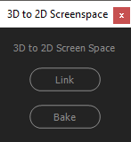
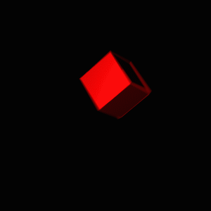
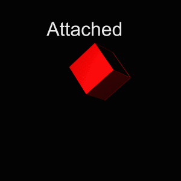
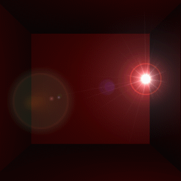

About
3D to 2D Screenspace is a GUI script for After Effects that allows artists to find the relative 2D screen space of a 3D layer.
Features
- Link or Bake Mode- Linking allows the relationship to be maintained by an expression. Baking bakes out the animation.
- Floating or Docking Interface - Adding the script to your ScriptsUI folder, adds it to After Effects 'window' menu and allows it dock. Running the script through a launcher or from "File > Scripts > Run Script File..." launches a non-dockable version.
Using the Script
Simply select a 3D layer, and click link or bake to generate a null whose data you can copy or to which you can parent.
Examples



Download/Contribute
Visit https://github.com/vidjuheffex/ae.3Dto2Dscreenspace to download the source, fork, contribute and more.